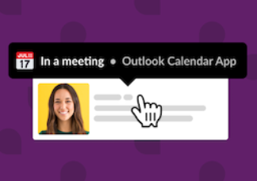
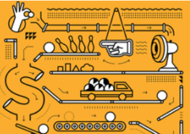

BlogFrontiers: New features, notable speakers and one fun SlackathonREAD THE RECAP-> |

TipSync your Slack status with your Outlook CalendarLEARN MORE-> |

eBookGetting Started with Slack for SalesGET EBOOK-> |